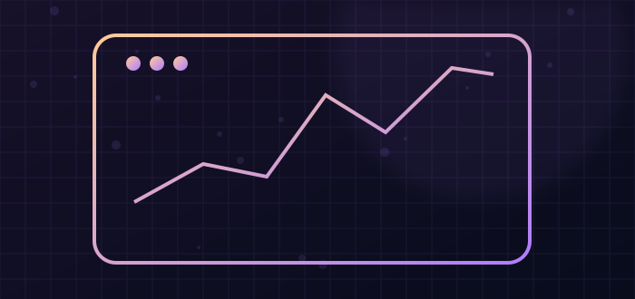
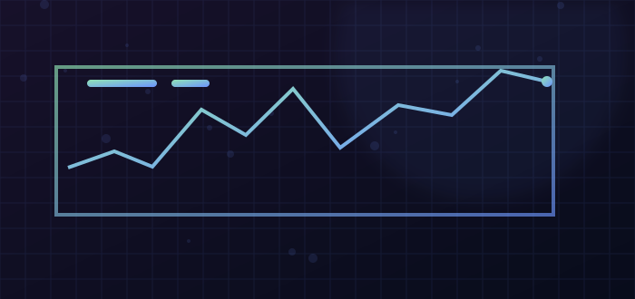
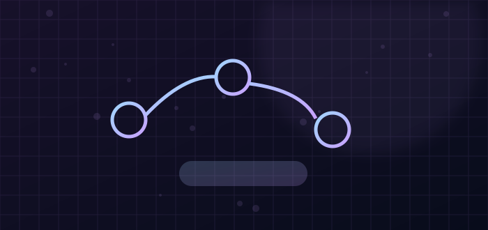

تمثيل بصري توضيحي01 / CAPSTONEمكتمل
Numoo نمو
مشروع تخرج جماعي للتنبؤ باتجاه الأسهم. دوري: تطوير الواجهات وربطها عبر Flask بنماذج طوّرها الفريق.

Numoo / UI + Flask integration · NCM / monitoring and logs
Explore evidence ↗من مكة، إلى العالم الرقمي✳
Software Developer / AI Enthusiast
أبني الواجهات، أربط التقنيات، وأهتم بما يحدث بعد التشغيل. هذا الموقع يوثّق ما أنجزته فعلًا، وما أعمل على تطويره الآن.
ليس استعراض مؤثرات؛ تجربة تشرح ما بنيته وما أتعلمه.
قبل أي مؤثر بصري، هذه الأعمال هي ما يدعم سيرتي: مساهمات موثقة، تدريب عملي، ومشروع منشور.

تمثيل بصري توضيحيمشروع تخرج جماعي للتنبؤ باتجاه الأسهم. دوري: تطوير الواجهات وربطها عبر Flask بنماذج طوّرها الفريق.

تمثيل بصري توضيحيأعمال تدريبية داخل تقنية المعلومات باستخدام Docker وPrometheus وGrafana وLoki.

تمثيل بصري توضيحيموقع تعليمي منشور على GitHub Pages مع اهتمام بالتجاوب والأداء وإمكانية الوصول.
تجربتان توضيحيتان تفاعليتان: مسار تكامل التطبيق، وكيف تساعد المراقبة على فهم النظام. ليست بيانات حقيقية من الأرصاد أو نتائج Numoo.
بدل رسم بياني ثابت، غيّر السيناريو وشاهد كيف تتبدل الإشارات والسجل التوضيحي. هذا يشرح فائدة Prometheus وGrafana وLoki — ولا يدّعي تشغيل نظام المركز هنا.
أنني أفهم العلاقة بين المقاييس والسجلات ولوحات المتابعة، وليس أنه قياس حقيقي من جهة عمل.
ليس كل مشروع منتجًا جاهزًا. هنا أميز العمل المكتمل من النموذج البحثي والفكرة قيد الاستكشاف، بدون تضخيم للإنجازات.
الحالة تعكس آخر ما وثقته من أعمالي. لا تعني كلمة «بحث» أن النظام قد نُفذ أو اختُبر ميدانيًا.
ثلاث مراحل تعبّر عن أجزاء من تجربتي، وليست ادعاءً بأنني بنيت نظام إنتاج واحدًا يجمع كل مشاريعي.
INTERACTIVE / EXPLORE
بناء واجهات عملية وتدفقات واضحة وربط عناصرها بما يحتاجه المستخدم.
مخطط توضيحي، وليس بيانات تشغيل مباشرة.
مهارات مستخدمة في مشاريع أو تدريب، وأخرى ضمن الدراسة والاستكشاف. أعرضها بشكل مختلف بحسب قوة الدليل، وليس بنسب إتقان غير قابلة للقياس.
علامات الأدوات التجارية المعروضة للتعريف بالتقنيات فقط. رموز المهارات العامة ليست شعارات شركات. مصادر الشعارات واستخدامها ↗

أنا خريج الذكاء الاصطناعي من جامعة أم القرى، شغوف ببناء البرمجيات واستكشاف ما يجعل النظام مفيدًا وموثوقًا. ساهمت في واجهات مشروع Numoo وتكامل Flask، وخضت تدريبًا عمليًا في تقنيات مراقبة الأنظمة بالمركز الوطني للأرصاد. وأحوّل الأفكار البحثية إلى خطط وتجارب يمكن اختبارها بدل الاكتفاء بوصفها.
التواريخ هنا تمثل محطات مثبتة أو مراحل مشروع، وليس سنوات خبرة وظيفية لم أكتسبها.
مهتم بالتعاون في تطوير البرمجيات وتكامل الذكاء الاصطناعي، وأرحب بالفرص المهنية والنقاشات التي تحوّل الأفكار إلى أعمال قابلة للاختبار.